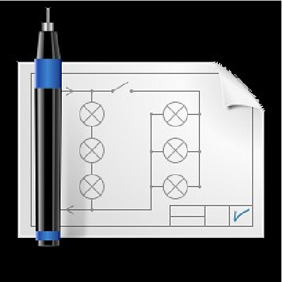

Table Of Contents
Related Topics
Documentation overview
QElectroTech Manual
Previous:
QElectroTech Manual
Next:
Start QElectroTech on Linux
This Page
Show Source
Quick search
Basics
¶
Start QElectroTech on Linux
Start QElectroTech from terminal
Start QElectroTech from applications menu
Start QElectroTech on Windows
Start QElectroTech on Mac
QElectroTech help menu
Tooltips
About QElectroTech
Online Manual
Youtube Channel
Download new version
Support the project
About Qt
Exit QElectroTech
Exit QElectroTech from Menu bar
Exit QElectroTech using keyboard shortcut